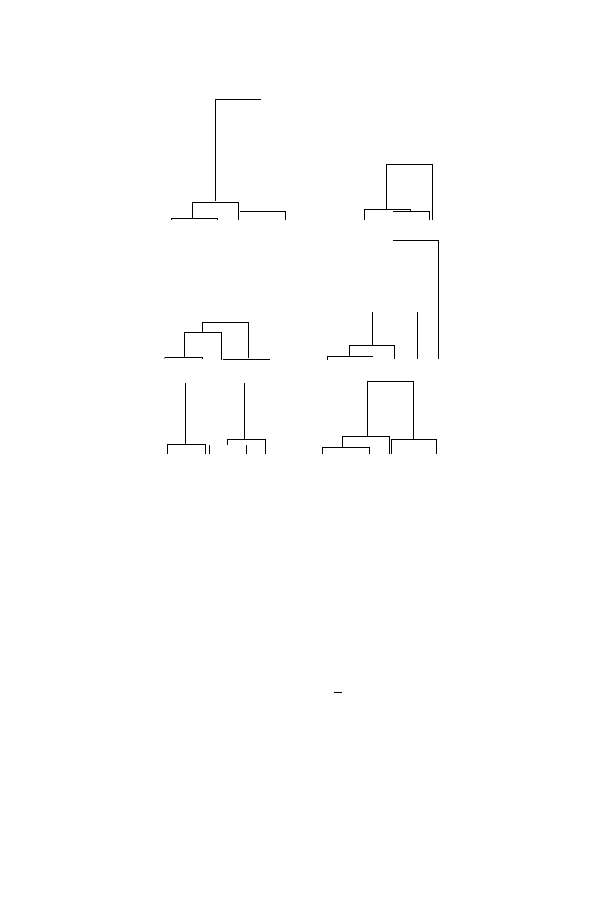

13.8 Introduction to the Coalescent
403
Fig. 13.9.
Six realizations, drawn on the same scale, of coalescent trees for a sample
of
n
= 5. (In each tree, the labels 1, 2, 3, 4, 5 should be assigned at random to the
leaves.)
Under the coalescent model, mutations are placed on the tree according to
independent Poisson processes of rate
θ/
2 down each branch of the tree. Since
a coalescent tree has
j
branches of length
T
j
, the length of the coalescent tree
of a sample of size
n
is
L
n
=
n
j
=2
jT
j
,
(13.31)
and the mean length, from Exercise 11, is
E
L
n
= 2
n
−
1
j
=1
1
j
.
(13.32)
If we suppose that each mutation results in a new segregating site, then
we see that the number of segregating sites in the sample is precisely the total
number of mutations that have arisen on the coalescent tree. The Poisson
nature of the mutations means that given the length
L
n
of the tree, the
number of mutations is Poisson with mean
θL
n
/
2. Hence, by averaging over
all possible tree lengths and using (13.32), we find that the expected number
of segregating sites in our sample is